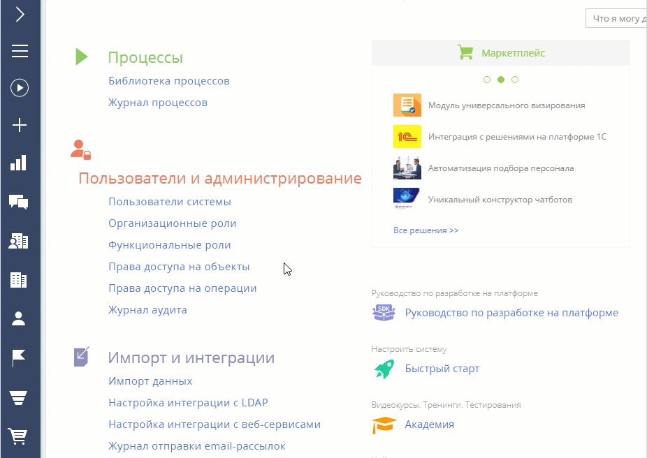
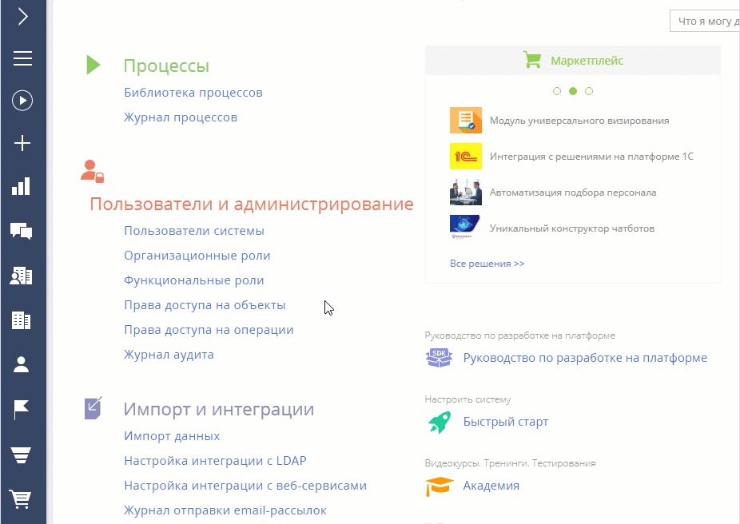
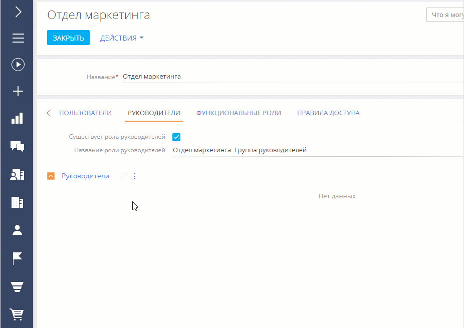
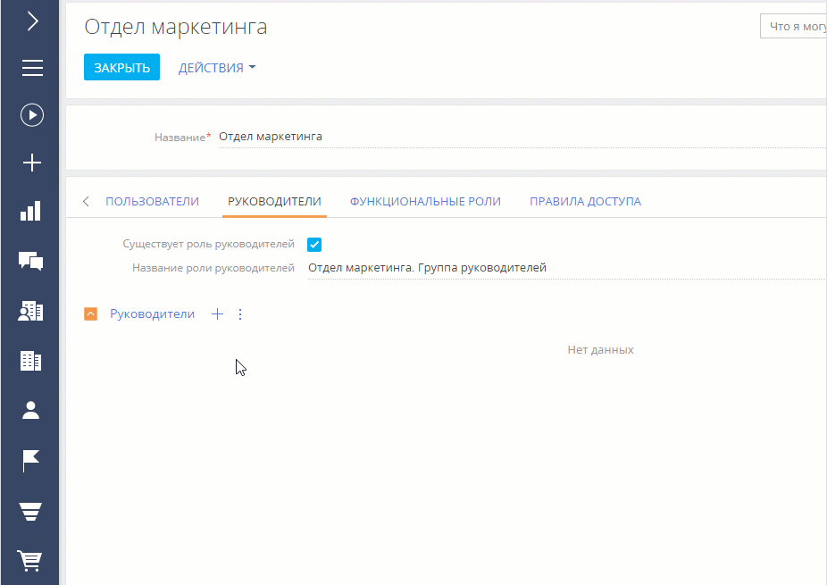
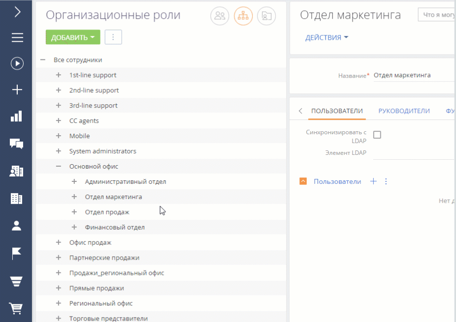
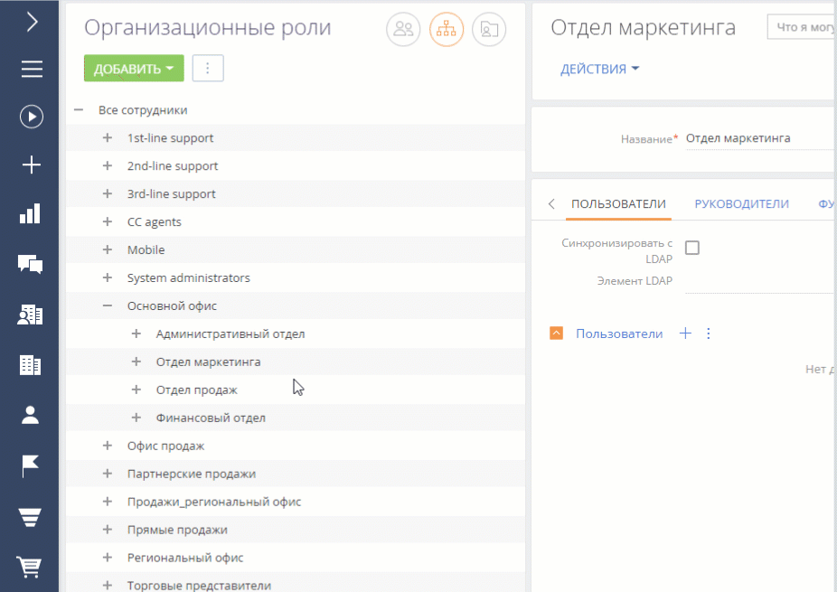

Организационные роли — это часть организационной структуры компании, некая организация или подразделение, например, “Отдел продаж основного офиса” или “HR-отдел регионального офиса”. Каждой организационной роли можно назначить права доступа, которые будут применены ко всем ее пользователям. Организационные роли также автоматически наследуют права доступа от своих родительских организационных ролей. Подробнее: Пользователи и роли (статья онлайн-курса).
Для управления организационными ролями нажмите → “Организационные роли”.
В разделе доступна древовидная организационная структура компании, сформированная из организационных ролей, а также информация по выбранной организационной роли.
Добавить организационную роль
-
Нажмите
 —> “Организационные роли”.
—> “Организационные роли”. -
В списке организационных ролей выберите родительскую роль. Например, создадим роль для регионального офиса.
-
Нажмите Добавить и укажите тип роли (“Организация” или “Подразделение”). Например, создадим подразделение “Отдел маркетинга” для регионального офиса.
-
Введите название новой роли. Название организационной роли должно быть уникальным.
-
Откройте вкладку Функциональные роли и добавьте функциональные роли, которые получат права доступа создаваемой организационной роли, например, “Менеджеры по маркетингу”, “Копирайтеры” и т. д.
Данный шаг не является обязательным.
-
Чтобы изменения вступили в силу, закройте страницу и нажмите
 → Актуализировать роли (Рис. 1).Рис. 1 — Добавление организационной роли
→ Актуализировать роли (Рис. 1).Рис. 1 — Добавление организационной роли
В результате в Creatio будет добавлена новая организационная роль. Ей автоматически будут предоставлены те же права доступа, что и родительской организационной роли.
Добавить роль руководителей
Вы можете настроить особые права доступа для управленческого персонала, добавив роль “Руководители” в существующую организационную роль. Роль руководителей существует в системе как самостоятельная организационная роль и может иметь собственные права доступа, но она не отображается в древовидном списке организационных ролей.
Роль руководителей автоматически наследует все права доступа роли подчиненных.
Чтобы добавить роль руководителей:
-
Нажмите
 → “Организационные роли”.
→ “Организационные роли”. -
В списке организационных ролей выберите организацию или подразделение, для которых нужно назначить роль руководителя. Например, создадим руководителей для роли “Отдел маркетинга” в основном офисе.
-
На вкладке Руководители установите признак Существует роль руководителей.
-
В поле Название роли руководителей укажите название роли (Рис. 2).
Рис. 2 — Создание роли руководителя для организационной роли “Отдел маркетинга”
-
На вкладке Руководители:
-
Если пользователь уже создан в системе, то нажмите
 и выберите Добавить существующего. Во всплывающем окне выберите нужных пользователей (Рис. 3).
и выберите Добавить существующего. Во всплывающем окне выберите нужных пользователей (Рис. 3). -
Если пользователь еще не создан в системе, то нажмите
 и выберите Добавить нового. Вам нужно будет заполнить страницу нового пользователя.Рис. 3 — Включение пользователя в роль руководителя
и выберите Добавить нового. Вам нужно будет заполнить страницу нового пользователя.Рис. 3 — Включение пользователя в роль руководителя
-
В результате новая роль руководителя будет добавлена в организационную роль. Пользователи, которые входят в роль руководителей, получат все права доступа этой роли, включая права, унаследованные от организационной роли подчиненных (в текущем примере — роль “Отдел маркетинга”).
В некоторых случаях руководители могут наследовать избыточные права подчиненных. Например, если какому-либо сотруднику были предоставлены расширенные права доступа для выполнения рабочих задач. Чтобы избежать наследования излишних прав доступа руководителями, вы можете ограничить автоматическое делегирование прав доступа для определенных ролей.
Для этого добавьте нужные организационные или функциональные роли в справочник “Роли пользователей, не наследуемые руководителями”. По умолчанию в справочник добавлена роль “System administrators”.
Подробнее: Настроить доступ по операциям, Настроить доступ по записям, Настроить права доступа на колонки, Настроить права доступа на системные операции.
Добавить пользователей в организационную роль
Существует несколько способов добавить пользователей в организационную роль:
-
Добавить существующих пользователей (выбрать из списка пользователей).
-
Создать и добавить нового пользователя (нужно будет заполнить страницу нового пользователя).
-
Импортировать пользователей LDAP.
Все пользователи, которые входят в организационную роль, наследуют настроенные для нее права доступа.
Чтобы добавить пользователей в организационную роль:
-
Нажмите
 → “Организационные роли”.
→ “Организационные роли”. -
В древовидной структуре ролей выберите роль, для которой нужно добавить пользователей.
-
На вкладке Пользователи:
-
Если пользователь уже создан в системе, то нажмите
 и выберите Добавить существующего. Выберите нужных пользователей (Рис. 4).
и выберите Добавить существующего. Выберите нужных пользователей (Рис. 4). -
Если пользователь еще не создан в системе, то нажмите
 и выберите Добавить нового. Заполните страницу нового пользователя.Рис. 4 — Добавление пользователей в организационную роль
и выберите Добавить нового. Заполните страницу нового пользователя.Рис. 4 — Добавление пользователей в организационную роль
-
В результате выбранные пользователи будут добавлены в организационную роль. Пользователи получат все права доступа своей организационной роли.
Подробнее: Настроить доступ по операциям, Настроить доступ по записям, Настроить права доступа на колонки, Настроить права доступа на системные операции.